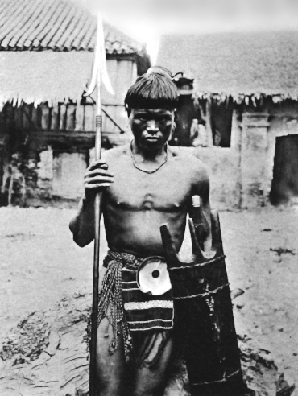
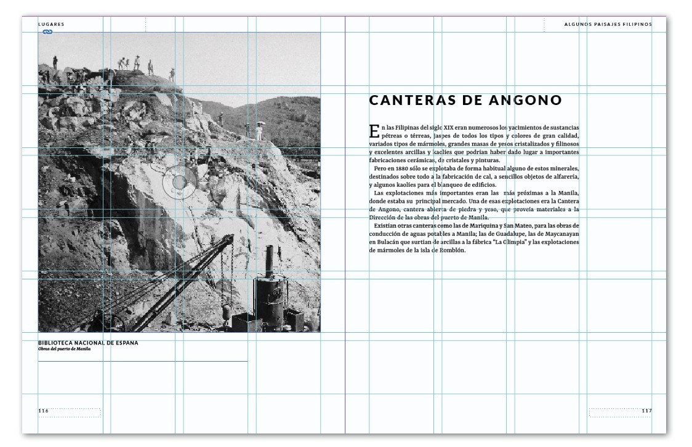
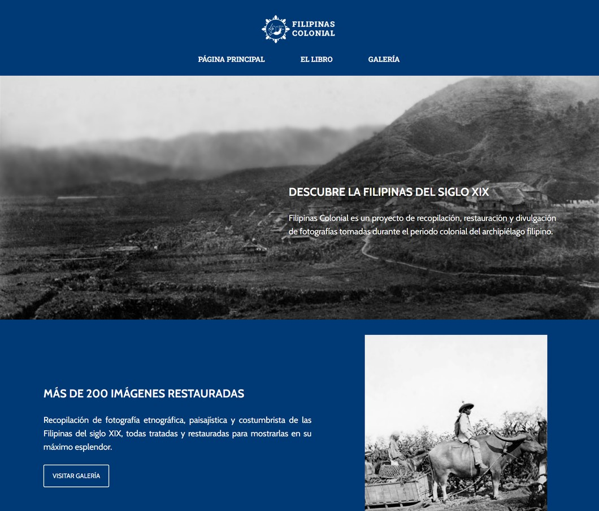
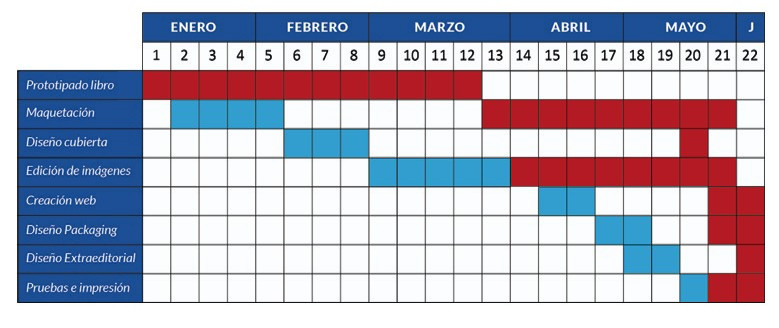

TFG Grado Superior Diseño Gráfico. Filipinas Colonial
DISEÑO GRÁFICO
•Diseño de producto y de marca.
•Tratamiento de Imágenes y Texto. Uso de Photoshop, Indesign e Illustrator.
•Página Web de Wordpress Promocional.
•Imágenes y vídeos promocionales.
•Producto final. Impresión de un álbum de 236 págs, con estuche protector y 10 postales promocionales.
•Gestión del tiempo y planificación. Planificación bajo un cronograma con objetivos.
•Investigación, recopilación y documentación. Para posterior redacción y organización del contenido del libro.
FILIPINAS COLONIAL es un proyecto de recopilación, restauración y divulgación de fotografías tomadas durante los últimos años del dominio español en las islas. El álbum contiene más de 200 fotografías en blanco y negro restauradas que vienen acompañadas de textos. El proyecto tiene como fin último acercar al lector a la historia compartida pero poco conocida entre las naciones hermanas de Filipinas y España.
"Filipinas Colonial" fue mi proyecto de fin de grado del Grado Superior de Diseño y Edición de Publicaciones Impresas y Multimedia en Salesianos Atocha, el cual presenté en Junio de 2022.
Lo considero muy importante en los inicios de mi carrera profesional porque fue un proyecto donde aglutiné todo lo aprendido en ese curso,
recibiendo una calificación de 10 por parte de los profesores.
El objetivo principal del proyecto se trataba de la restauración de fotografías antiguas de la Filipinas del siglo XIX y la edición de un libro documental sobre éstas imágenes y su contexto.
Como objetivos secundarios me propuse la creación de contenido multimedia(vídeos, wordpress, redes sociales...).
Es un proyecto al que le guardo cariño ya que aprendí mucho a nivel técnico. También me desenvolví bien en el aspecto de la gestión del tiempo y la superación de problemas
ya que fue un proyecto de tamaño considerable con una fecha de entrega concreta, extendiéndose 22 semanas desde enero de 2022 hasta junio del mismo año.


Un pasaporte a una época de la que poco ha quedado porque los terremotos y las guerras han hecho que la nación flipina
se haya reconstruido una y otra vez hasta ser lo que son hoy.
Filipinas colonial pretende mostrar la faceta quizás más desconocida de las islas, la de la vida diaria, las costumbres, las
miradas y las calles, dejando a un lado el ruido de las famosas batallas y revoluciones.
VÍDEO PROMOCIONAL DEL RESULTADO
El vídeo muestra el resultado de la restauración y coloreo de las imágenes.
MOCKUPS DEL PRODUCTO FINAL

DISEÑO Y MAQUETACIÓN DEL LIBRO
Al ser un libro de fotografía escogí un formato grande. Otros elementos que quería que tuviera eran
los marcadores de página y de sección, pero también la fuente de procedencia de las imágenes.Conciliar
éstos elementos fue una parte complicada ya que hasta alcanzar una buena armonías.
Las medidas de la página son de 20cm por 26cm. La caja de composición tiene 4 columnas verticales y 6
horizontales.
Estas columnas son la clave para hacer un diseño más dinámico y heterogéneo en el que diferentes tamaños de imagen se ajusten en la página de forma armoniosa.
El margen inferior ocupa 25mm y es más grande que el resto para servir de descanso a la vista. Los márgenes superiores y exteriores son de 10mm, mientras que el margen interno es de 15mm para compensar la
pérdida por la encuadernación

PÁGINA WEB DE WORDPRESS
(captura de pantalla de la ya extinta web)

CRONOGRAMA DIVIDIDO EN SEMANAS
Destaca que la fase de investigación y prototipado fue mucho más larga de lo planteado.
El proyecto inició su desarrollo el 3 de enero y finalizó el 4 de junio, aunque la producción del producto
ocupó una semana más.
Se pueden apreciar las tareas y objetivos del proyecto.
Planteamiento inicial del proyecto(azul)
Desarrollo real del proyecto(rojo)
